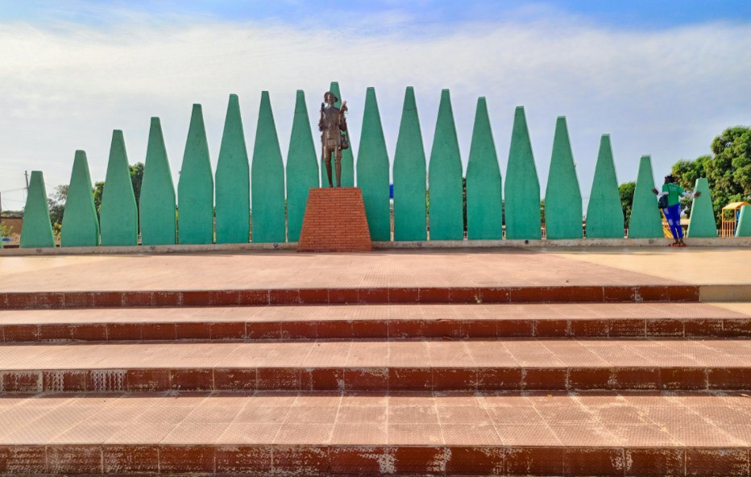

Bienvenue à Banfora
Introduction à Banfora
Banfora, la cité du Paysan Noir, est une ville très dynamique du Burkina Faso. Elle est caractérisée par sa densité pluviométrique. En effet, elle fait partie des régions les plus arrosées du pays.
Située au Sud-Ouest du Burkina Faso, Banfora est la capitale de la région des Cascades. Connue pour sa richesse naturelle, sa culture vivante et son patrimoine exceptionnel, elle attire chaque année des visiteurs curieux de découvrir des trésors comme les Cascades de Karfiguéla, le Lac sacré de Tengrela ou encore les mystérieux Dômes de Fabédougou.